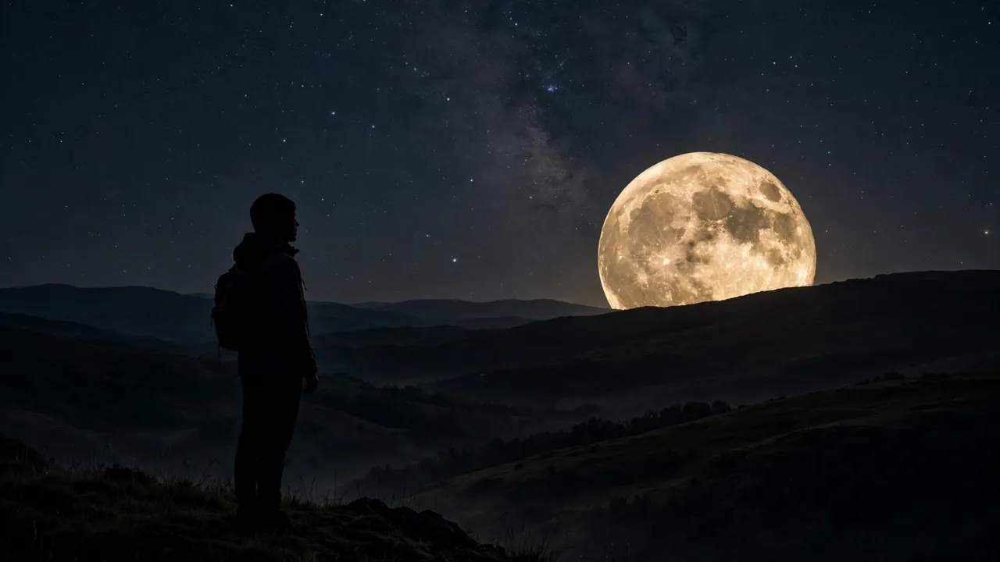
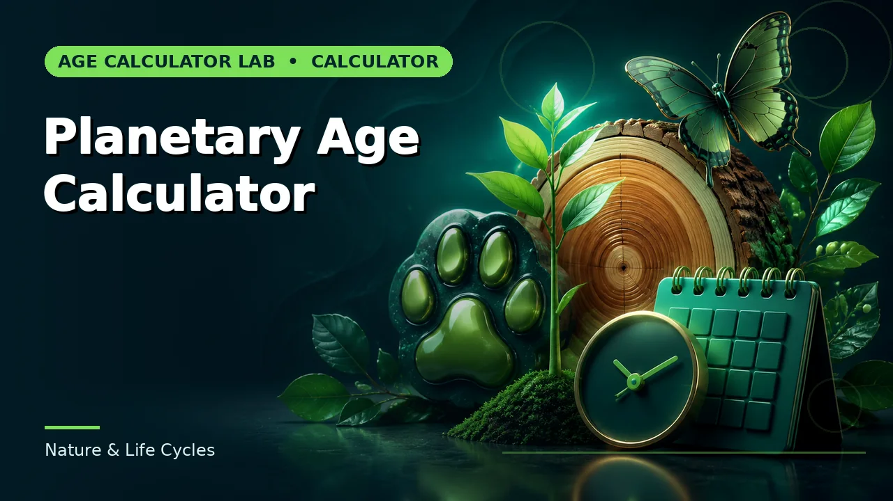
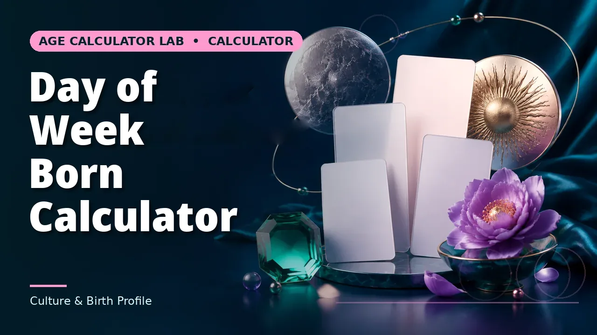

Quick answer
Find the Moon’s age on today’s date, then add the days to age 14.8 for the next full Moon. Example: on 20 October 2026 the Moon is 8.62 days old, so the next full Moon is about 6 days later, on 26 October 2026 — the Hunter’s Moon.
The method
The Moon’s age is counted from the last new Moon, using the synodic month of 29.530588853 days and the reference new Moon of 6 January 2000. The next full Moon is the date the age reaches half the cycle, about 14.77 days. The next new Moon is the date the age completes the cycle.
Because the calculation assumes a circular orbit and a uniform cycle, the result carries about half a day of uncertainty. A full Moon that the calculation places on 26 October may be listed as 25 or 26 October in an almanac — that is the approximation, not an error.
Full Moon calendar: rest of 2026 and 2027
Rest of 2026: 26 October — Hunter’s Moon; 24 November — Beaver Moon (supermoon); 24 December — Cold Moon (supermoon, the closest of the year). 2026 is a 13-moon year, thanks to May’s blue Moon (31 May, a micromoon).
2027: 22 January — Wolf Moon (supermoon); 20 February — Snow Moon (supermoon, penumbral lunar eclipse); 22 March — Worm Moon; 20 April — Pink Moon; 20 May — Flower Moon (seasonal blue Moon); 19 June — Strawberry Moon; 18 July — Buck Moon; 17 August — Sturgeon Moon (micromoon, penumbral lunar eclipse); 15 September — Harvest Moon (unusually close to the equinox); 15 October — Hunter’s Moon; 14 November — Beaver Moon; 13 December — Cold Moon.
Notice the pattern: 2027’s dates land roughly a week earlier in each month than 2026’s. That is the lunar cycle sliding backwards against months of 30 and 31 days — about eleven days of drift over a year.

The traditional names
Full Moons carry traditional names by month: January’s Wolf Moon, February’s Snow Moon, March’s Worm Moon, April’s Pink Moon, May’s Flower Moon, June’s Strawberry Moon, July’s Buck Moon, August’s Sturgeon Moon, September’s Harvest Moon (the full Moon nearest the autumn equinox), October’s Hunter’s Moon, November’s Beaver Moon and December’s Cold Moon. The names come from North American and European folk traditions and describe the season, not the Moon’s appearance — a Pink Moon is not pink.
Other traditions name Moons differently: southern-hemisphere calendars, for example, use Mantis, Dassie, Harvest, Diamond, Frost, Sisters, Meerkat, Peace, Spring, Whale, Milk and Springbok Moons. The Moon is the same; the name is local.
The timezone trap: same Moon, different date
A full Moon is an instant, not a day. The Hunter’s Moon of October 2026 is full at about 04:12 UTC on 26 October — which is the evening of 26 October in the Americas, the early hours of 26 October in Europe, and the afternoon of 26 October in much of Asia, but can fall on a different wall-calendar date near the International Date Line. One widely cited calendar lists the September 2026 Harvest Moon as 26 September 16:49 UTC — Saturday afternoon on the US east coast, but Sunday 27 September at 2:49am on Australia’s east coast.
So when a calendar and your local listing disagree by a day, neither is wrong: they are reporting the same instant in different timezones. The calculator on this site gives the date in your local terms; almanacs usually give UTC.
Why the date shifts
A calendar year has 365.25 days and a lunar year (12 cycles) has about 354.37 days. The difference, about 10.9 days, is why full Moons arrive about 11 days earlier each year and why some years have 13 full Moons instead of 12. The extra full Moon in a season is the origin of the “blue Moon” — though the term has also come to mean the second full Moon in a calendar month, which is the more common modern usage.
Planning around a full Moon
A full Moon rises at sunset and sets at sunrise, so it dominates the whole night. For stargazing, the days around new Moon are better; for a night walk or a photograph of the Moon itself, the full Moon is the subject. If the goal is a photograph, the night before and after full are often better than the night itself, because the Moon is slightly less than full and its craters cast shadows that a fully lit disc lacks.
For the best-known photographic Moons of the next year, mark 24 December 2026 (Cold Moon supermoon, closest of the year) and 22 January 2027 (Wolf Moon supermoon).
Common mistakes to avoid
Expecting the full Moon on the same date each year; treating a half-day difference from an almanac as an error; assuming a named Moon looks the colour or object of its name; confusing the full Moon with a supermoon, which is a full Moon near perigee; and copying a UTC date into a local diary without converting the timezone.
Related calculators
Use the Moon Age Calculator for the next new and full Moon from any date, and the other tools for the dates around it.



Frequently asked questions
How do I find the next full Moon?
Find the Moon’s age today, then add the days to age 14.8. On 20 October 2026 (age 8.62 days) the next full Moon is about 6 days later, on 26 October 2026.
What are the next full Moons?
26 October 2026 Hunter’s Moon, 24 November 2026 Beaver Moon (supermoon), 24 December 2026 Cold Moon (supermoon), 22 January 2027 Wolf Moon (supermoon), 20 February 2027 Snow Moon (supermoon, penumbral eclipse).
Why does the full Moon date shift each year?
Because 12 lunar cycles total about 354 days while a calendar year has 365.25 days — full Moons arrive about 11 days earlier each year.
Why do calendars disagree by a day?
A full Moon is an instant, reported in different timezones. The same instant can be 26 September in UTC and 27 September in Australia.
What is a blue Moon?
Traditionally the extra full Moon in a season with four; in modern usage, the second full Moon in a calendar month. 2026 is a 13-moon year.
Why do almanacs sometimes differ by a day?
The calculation assumes a circular orbit and a uniform cycle, carrying about half a day of uncertainty.
Is a Pink Moon pink?
No. The traditional names describe the season, not the Moon’s appearance.
What is a supermoon?
A full Moon near perigee, the Moon’s closest approach. The Cold Moon of 24 December 2026 is the closest of the year.
When is the best night to photograph the Moon?
Often the night before or after full, when craters cast shadows that a fully lit disc lacks.
Is a full Moon date the same everywhere?
No. The instant is the same; the wall-calendar date depends on your timezone.